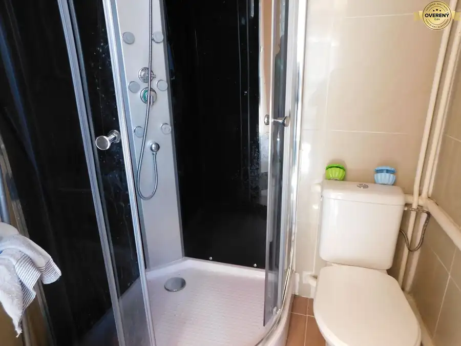
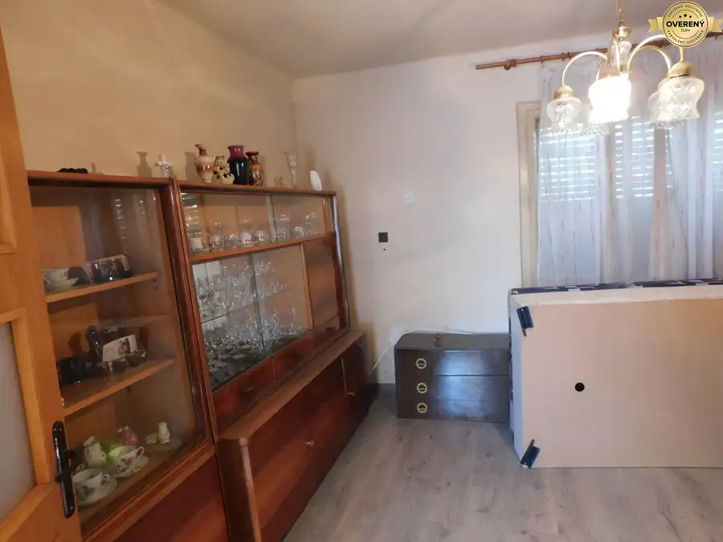
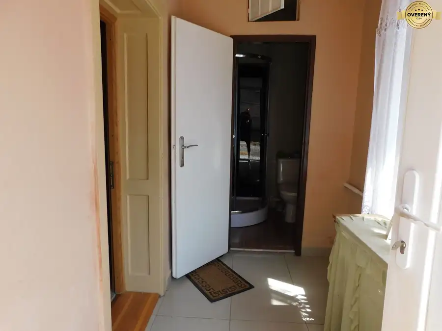
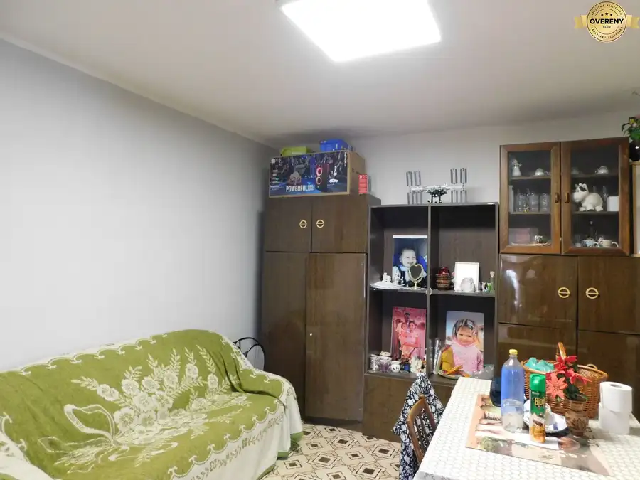

Na predaj 5-izbový rodinný dom s veľkým pozemkom – Dvory nad Žitavou
Dvory nad Žitavou





- Plocha110 m²
- Poschodie0.
- Stavpôvodný
- Vlastníctvoosobné
O nehnuteľnosti
Hľadáte miesto, kde vaša rodina nájde skutočný domov, dostatok súkromia a priestor na realizáciu svojich snov?
Tento 5-izbový rodinný dom v obci Dvory nad Žitavou spája pokojné vidiecke bývanie s výbornou dostupnosťou do mesta.
Dom je v zachovalom, čistom stave, s kompletne novou kúpeľňou. Ponúka ideálne plátno pre rekonštrukciu podľa vašich vlastných predstáv, no je pripravený aj na okamžité, nenáročné bývanie.
Kľúčové parametre nehnuteľnosti:
Úžitková plocha domu: 110 m² (skvelá dispozícia pre väčšiu rodinu)
Výmera pozemku: 899 m² (slnečný, rovinatý, ideálny na bazén, altánok či záhradkárčenie)
Počet izieb: 5 priestranných miestností
Samostatná letná kuchyňa: 22 m² (plne funkčná, momentálne využívaná ako hlavná kuchyňa – ideálna na letné zaváranie alebo grilovačky)
Rok výstavby: 1955 (poctivá stavba z miešaných materiálov)
Stav a technické vybavenie:
Kúpeľňa: Kompletne nová, moderná a vkusne zrekonštruovaná.
Okná a dvere: Vstupné dvere a jedno okno sú už vymenené za plastové, ostatné okná sú pôvodné, zachovalé drevené.
Podlahy: V izbách sa nachádza pôvodná drevená palubovka (ideálna na prebrúsenie), v chodbe a kúpeľni je dlažba.
Kúrenie a voda: Kúrenie je zabezpečené plynovým kotlom a radiátormi, ohrev vody elektrickým bojlerom.
Inžinierske siete: Dom je napojený na elektrinu, plyn a obecnú kanalizáciu. Na pozemku sa nachádza vlastná studňa, ktorá sa používa.
Život v obci Dvory nad Žitavou (Len 7 km od Nových Zámkov):
Obec patrí medzi najvyhľadávanejšie lokality v regióne vďaka kompletnej občianskej vybavenosti.
Pre deti: Slovenská aj maďarská základná a materská škola priamo v obci.
Služby: Potraviny, lokálne obchody, pošta, lekáreň, bankomat a skvelé reštaurácie.
Doprava: Výborné a rýchle vlakové aj autobusové spojenie do okolitých miest (ideálne na dochádzanie do práce).
✨ Prečo si vybrať práve tento dom? Tento dom má dušu a obrovský potenciál. Vďaka veľkorysému pozemku vám nikto nebude pozerať do dvora a samostatná letná kuchyňa ponúka skvelé zázemie pre rodinné oslavy. Ak hľadáte bezpečné prostredie pre deti, priestor na vlastnú zeleninu a bývanie, ktoré si dotvoríte podľa seba, tento dom musíte vidieť naživo.
V prípade záujmu alebo potreby ďalších informácií ma kontaktujte na telefónnom čísle : - Diana Vargová.
Pri vážnom záujme dohoda možná.
DOBRÉ REALITY – Sme spoľahlivá realitná spoločnosť a líder v oblasti realitných služieb.
Viac ako 15 rokov nám dôverujú tisícky klientov po celom Slovensku.
Pomôžeme Vám najvýhodnejšie predať, kúpiť alebo prenajať nehnuteľnosť.
Našim klientom garantujeme:
- osobný prístup a spoľahlivé služby,
- profesionálne spracovanie inzercie,
- bezpečný priebeh celého procesu.
Vaša nehnuteľnosť bude široko inzerovaná na najdôležitejších inzertných portáloch, vrátane
platených. U nás máte istotu prvotriedneho servisu a služieb po celom Slovensku.
Najspokojnejší REALITNÍ MAKLÉRI sú súčasťou úspešného tímu DOBRÉ REALITY. Ak chcete
spokojne a bez stresu pracovať v oblasti nehnuteľností v príjemnom firemnom prostredí, určite
spolupracujte s nami. O výhodách spolupráce s nami sa už presvedčili mnohí začínajúci aj skúsení
realitní makléri.
DOBRÉ REALITY sú členom Združenia realitných kancelárií Slovenska (ZRKS) a Realitnej únie SR.
Parametre
- Rozloha pozemku
- 899 m²
- Zastavaná plocha
- 110 m²
- Úžitková plocha
- 110 m²
- Poschodie
- prízemie
- Vlastníctvo
- osobné
- Stav
- pôvodný
- Status
- aktívne
- Voda
- studňa
- El. napätie
- 230/400V
- Plyn
- áno
- Kanalizácia
- áno
- Kúpeľňa
- áno
- Vykurovanie
- vlastné - plyn
- Garáž
- nie
- Parkovanie
- áno
- Postavené z
- Zmiešané
- Zateplený objekt
- nie
- Strecha
- pôvodná
- Energetický certifikát
- nie
- Okná
- drevené
- Terén
- rovina
- Prístupová cesta
- asfaltová cesta
- Dátum zverejnenia
- 2026-08-11
Kde to je
Mohlo by Vás zaujímať
 Rodinné domyNové
78 000 €Ponúkame Vám na predaj 4-izb. rodinný dom vo Dvoroch nad Žitavou .
Dvory nad Žitavou
125 m²
Rodinné domyNové
78 000 €Ponúkame Vám na predaj 4-izb. rodinný dom vo Dvoroch nad Žitavou .
Dvory nad Žitavou
125 m²
 Rodinné domyNové
280 000 €Ponúkame na predaj 2 rodinné domy na jednom pozemku v obci Dvory nad Ž
Dvory nad Žitavou
230 m²
Rodinné domyNové
280 000 €Ponúkame na predaj 2 rodinné domy na jednom pozemku v obci Dvory nad Ž
Dvory nad Žitavou
230 m²
 Rodinné domyNové
109 000 €Ponúkame na predaj 3-izb. rodinný dom v obci Dvory nad Žitavou.
Dvory nad Žitavou
112 m²
Rodinné domyNové
109 000 €Ponúkame na predaj 3-izb. rodinný dom v obci Dvory nad Žitavou.
Dvory nad Žitavou
112 m²